Best meals under HK$50 HK$50 以下
Ranked by our Value Score. Prices are a guide and not yet checked in store. 60 places.
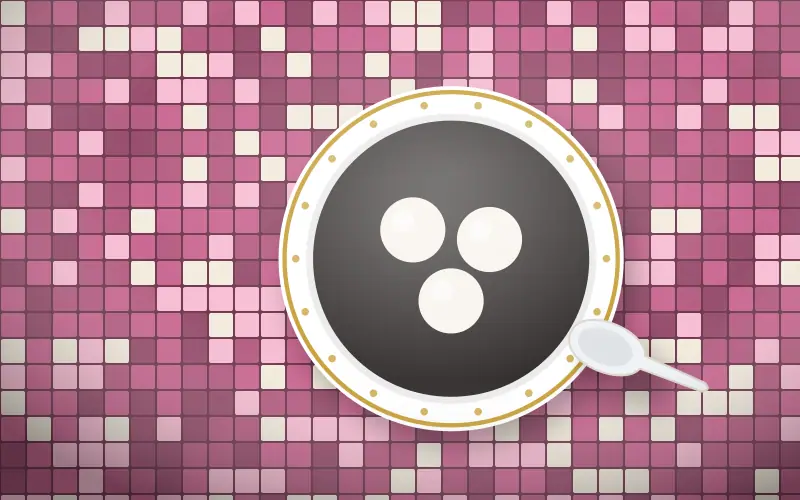
Kung Wo Beancurd Factory公和荳品廠 · Sham Shui Po$26 Kwan Kee Store坤記糕品 · Sham Shui Po~$14
Kwan Kee Store坤記糕品 · Sham Shui Po~$14 Hop Yik Tai合益泰小食 · Sham Shui Po$18
Hop Yik Tai合益泰小食 · Sham Shui Po$18  Sang Kee Congee Shop生記粥品專家 · Sheung Wan~$48
Sang Kee Congee Shop生記粥品專家 · Sheung Wan~$48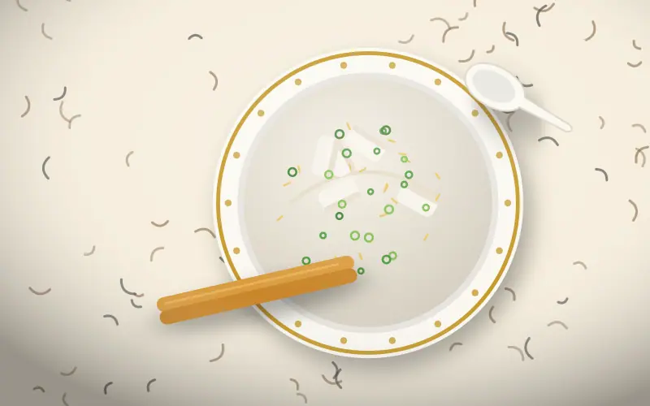
Mui Kee Congee妹記生滾粥品 · Mong Kok~$45 Kai Kai Dessert佳佳甜品 · Jordan$32
Kai Kai Dessert佳佳甜品 · Jordan$32  Happy Cake Shop快樂餅店 · Wan Chai~$20
Happy Cake Shop快樂餅店 · Wan Chai~$20 Lau Sum Kee劉森記麵家 · Sham Shui Po$46
Lau Sum Kee劉森記麵家 · Sham Shui Po$46  Cheung Hing Kee Shanghai Pan-fried Buns祥興記上海生煎包 · Tsim Sha Tsui~$32
Cheung Hing Kee Shanghai Pan-fried Buns祥興記上海生煎包 · Tsim Sha Tsui~$32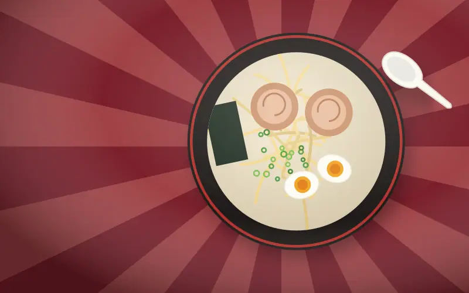
Hometown Teahouse一休 · Cheung Chau~$38 Kam Wah Cafe金華冰廳 · Mong Kok$38
Kam Wah Cafe金華冰廳 · Mong Kok$38  Kung Lee Sugar Cane Juice公利真料竹蔗水 · Central~$22
Kung Lee Sugar Cane Juice公利真料竹蔗水 · Central~$22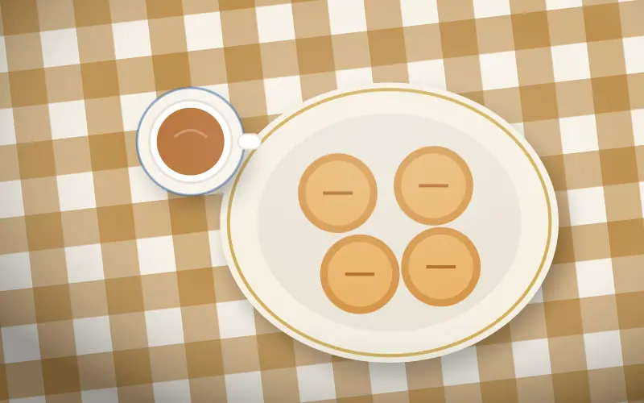
Kwok Kam Kee Cake Shop郭錦記餅店 · Cheung Chau~$16 On Lee Noodle安利魚蛋粉麵 · Shau Kei Wan~$40
On Lee Noodle安利魚蛋粉麵 · Shau Kei Wan~$40 Auntie Yi Tofu Pudding依姐豆腐花 · Lamma Island~$15
Auntie Yi Tofu Pudding依姐豆腐花 · Lamma Island~$15 Yuen Kee Dessert源記甜品 · Sai Ying Pun~$30
Yuen Kee Dessert源記甜品 · Sai Ying Pun~$30 Ah Po Tofu Fa亞婆豆腐花 · Tai Po~$16
Ah Po Tofu Fa亞婆豆腐花 · Tai Po~$16 Tsim Chai Kee Noodle沾仔記 · Central~$42
Tsim Chai Kee Noodle沾仔記 · Central~$42 Tak Fat Beef Balls德發牛丸 · Central~$42
Tak Fat Beef Balls德發牛丸 · Central~$42 Kam Fung Cafe金鳳茶餐廳 · Wan Chai$36
Kam Fung Cafe金鳳茶餐廳 · Wan Chai$36  Mak An Kee Noodle麥奀記（忠記）麵家 · Central~$45
Mak An Kee Noodle麥奀記（忠記）麵家 · Central~$45 Man Kee Cart Noodle文記車仔麵 · Sham Shui Po~$48
Man Kee Cart Noodle文記車仔麵 · Sham Shui Po~$48 Sing Heung Yuen勝香園 · Central$40
Sing Heung Yuen勝香園 · Central$40  Australia Dairy Company澳洲牛奶公司 · Jordan$42
Australia Dairy Company澳洲牛奶公司 · Jordan$42  Wai Kee Noodle Cafe維記咖啡粉麵 · Sham Shui Po~$50
Wai Kee Noodle Cafe維記咖啡粉麵 · Sham Shui Po~$50 Lee Keung Kee李強記 · North Point$28
Lee Keung Kee李強記 · North Point$28 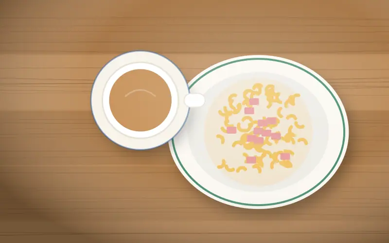
Kam Kee Cafe金記冰室 · Sham Shui Po$44 Sai Kung Café & Bakery西貢茶餐廳餅店 · Sai Kung~$32
Sai Kung Café & Bakery西貢茶餐廳餅店 · Sai Kung~$32 Sun Heung Yuen新香園（堅記） · Sham Shui Po~$40
Sun Heung Yuen新香園（堅記） · Sham Shui Po~$40 Wing Wah Cake Shop榮華餅家 · Yuen Long~$24
Wing Wah Cake Shop榮華餅家 · Yuen Long~$24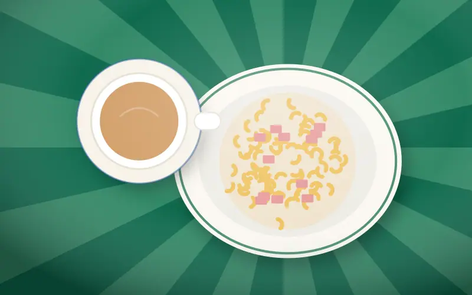
Hoi On Cafe海安咖啡室 · Sheung Wan~$38 Kam Wing Tai Fish Ball甘永泰魚蛋 · Cheung Chau~$25
Kam Wing Tai Fish Ball甘永泰魚蛋 · Cheung Chau~$25 Yee Shun Milk Company義順牛奶公司 · Causeway Bay$42
Yee Shun Milk Company義順牛奶公司 · Causeway Bay$42  Cheung Hing Coffee Shop祥興咖啡室 · Happy Valley~$34
Cheung Hing Coffee Shop祥興咖啡室 · Happy Valley~$34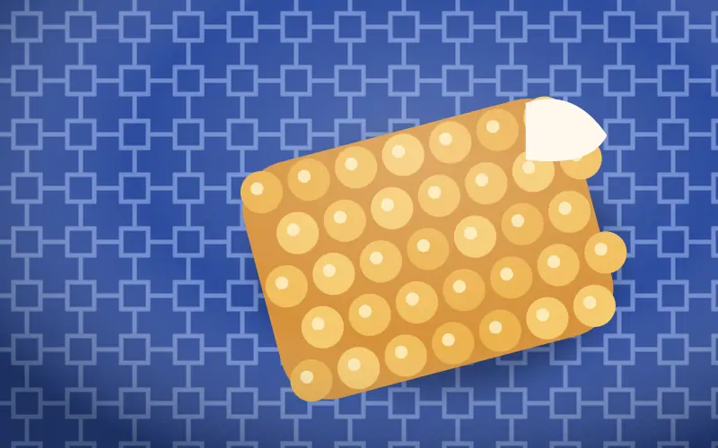
Mammy Pancake媽咪雞蛋仔 · Tsim Sha Tsui$30 Tai O Charcoal Egg Waffle大澳炭燒雞蛋仔 · Tai O~$25
Tai O Charcoal Egg Waffle大澳炭燒雞蛋仔 · Tai O~$25 Capital Cafe華星冰室 · Wan Chai$48
Capital Cafe華星冰室 · Wan Chai$48  Bafang Dumpling (Tsuen Wan)八方雲集（荃灣） · Tsuen Wan$36
Bafang Dumpling (Tsuen Wan)八方雲集（荃灣） · Tsuen Wan$36  Yee Shun Milk Company (Jordan)義順牛奶公司（佐敦） · Jordan$46
Yee Shun Milk Company (Jordan)義順牛奶公司（佐敦） · Jordan$46  Lan Fong Yuen蘭芳園 · Central$45
Lan Fong Yuen蘭芳園 · Central$45 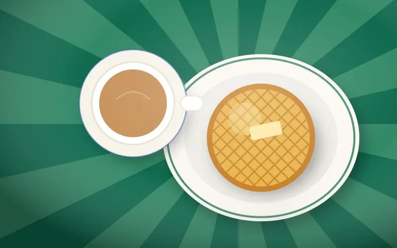
Tai Po Hui Market Cooked Food Centre大埔墟街市熟食中心 · Tai Po~$35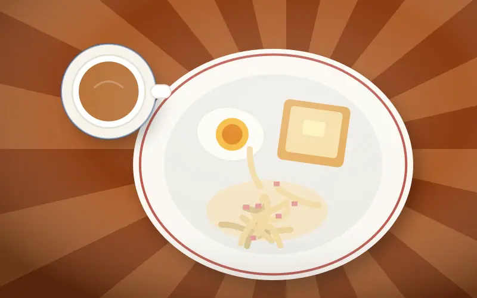
Fairwood (Chai Wan)大快活（柴灣） · Chai Wan$32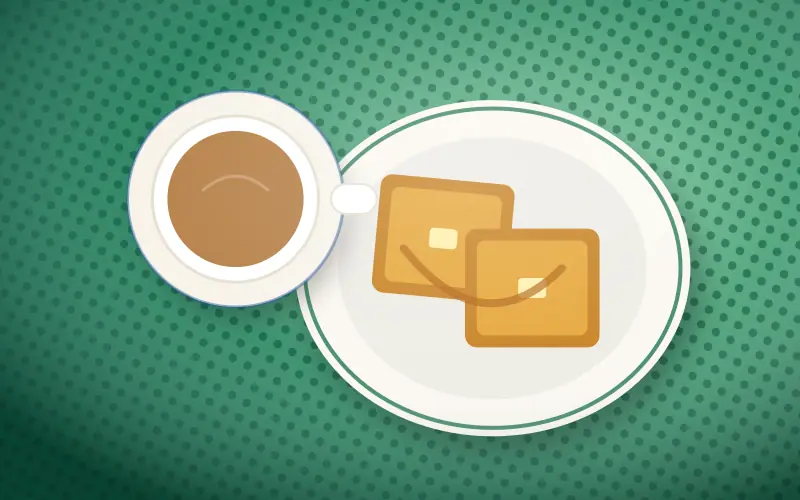
Hokkaido Dairy Farm Milk Restaurant北海道牧場餐廳 · Mong Kok$42 Bafang Dumpling (Kwun Tong)八方雲集（觀塘） · Kwun Tong$42
Bafang Dumpling (Kwun Tong)八方雲集（觀塘） · Kwun Tong$42  Maxim's MX (Tseung Kwan O)美心MX（將軍澳） · Tseung Kwan O$33
Maxim's MX (Tseung Kwan O)美心MX（將軍澳） · Tseung Kwan O$33 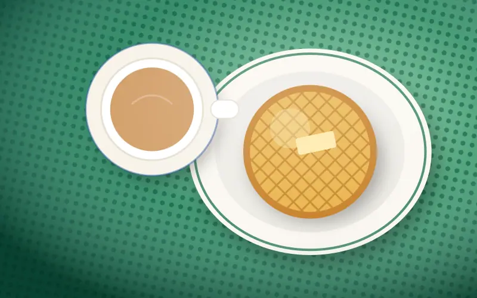
Shau Kei Wan Cooked Food Centre筲箕灣街市熟食中心 · Shau Kei Wan~$36 Fei Jie肥姐小食店 · Mong Kok~$30
Fei Jie肥姐小食店 · Mong Kok~$30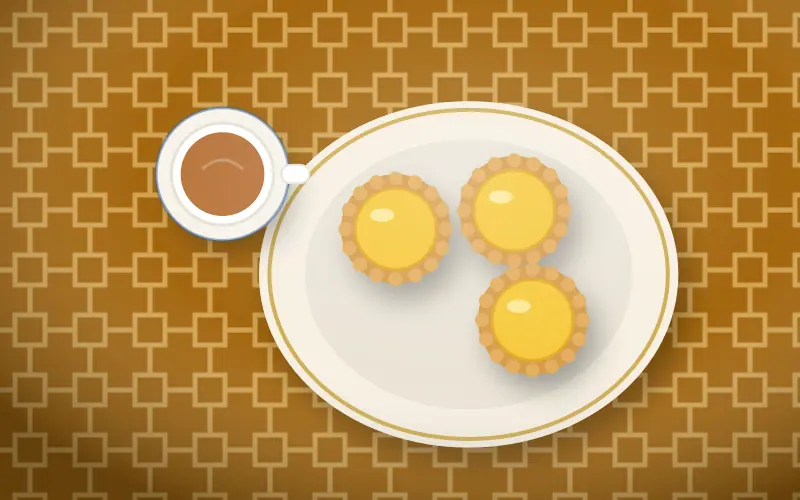
Tai Cheong Bakery泰昌餅家 · Central$38 Shui Kee Coffee瑞記咖啡 · Central~$48
Shui Kee Coffee瑞記咖啡 · Central~$48 Café de Coral (Wong Tai Sin)大家樂（黃大仙） · Wong Tai Sin$34
Café de Coral (Wong Tai Sin)大家樂（黃大仙） · Wong Tai Sin$34 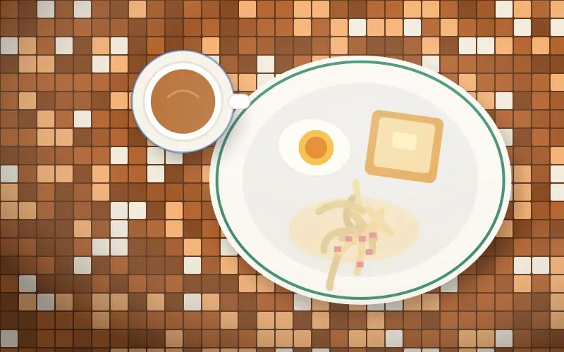
Fairwood (Kwai Fong)大快活（葵芳） · Kwai Fong$36 Tsui Wah (Prince Edward)翠華（太子） · Prince Edward$36
Tsui Wah (Prince Edward)翠華（太子） · Prince Edward$36  Maxim's MX (Kwai Chung)美心MX（葵涌） · Kwai Chung$33
Maxim's MX (Kwai Chung)美心MX（葵涌） · Kwai Chung$33 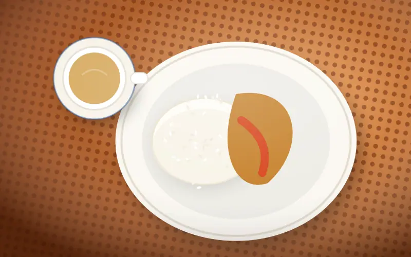
Fairwood (Tuen Mun)大快活（屯門） · Tuen Mun$30 Café de Coral (Ma On Shan)大家樂（馬鞍山） · Ma On Shan$34
Café de Coral (Ma On Shan)大家樂（馬鞍山） · Ma On Shan$34  Café de Coral (Tuen Mun)大家樂（屯門） · Tuen Mun$34
Café de Coral (Tuen Mun)大家樂（屯門） · Tuen Mun$34  Saint Honoré (Yuen Long)聖安娜餅屋（元朗） · Yuen Long~$24
Saint Honoré (Yuen Long)聖安娜餅屋（元朗） · Yuen Long~$24 Maxim's MX (Tai Po)美心MX（大埔） · Tai Po$33
Maxim's MX (Tai Po)美心MX（大埔） · Tai Po$33 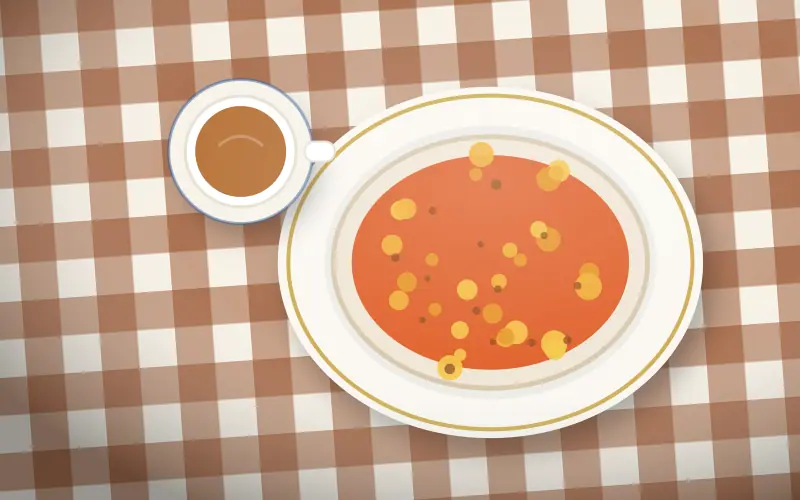
Fairwood (Tseung Kwan O)大快活（將軍澳） · Tseung Kwan O$38 Meet Fresh (Causeway Bay)鮮芋仙（銅鑼灣） · Causeway Bay$42
Meet Fresh (Causeway Bay)鮮芋仙（銅鑼灣） · Causeway Bay$42 More guides
Best meals under HK$50Cheap eats under HK$30Best value for moneyLate-night cheap eatsHidden gemsCheap breakfast in Hong KongRoast Meats 燒味Cha Chaan Teng 茶餐廳Dim Sum 點心Noodles 粉麵Congee 粥品Claypot 煲仔Cantonese 粵菜Seafood 海鮮Desserts 甜品Bakery 餅店Street Snacks 小食Vegetarian 素食HK Fast Food 快餐Rice Noodles 米線Thai 泰國菜Curry 咖喱Japanese 日式Vietnamese 越南菜Taiwanese 台灣菜Shanghainese 上海菜Dumplings & Northern 北方菜HK-style Western 港式西餐